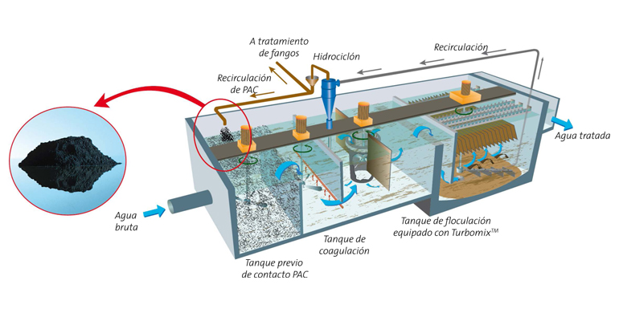
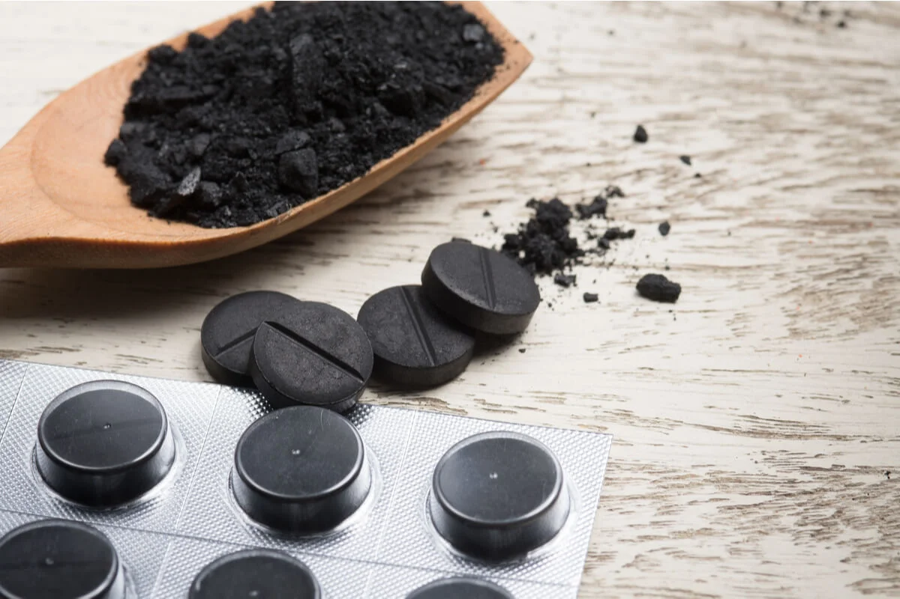
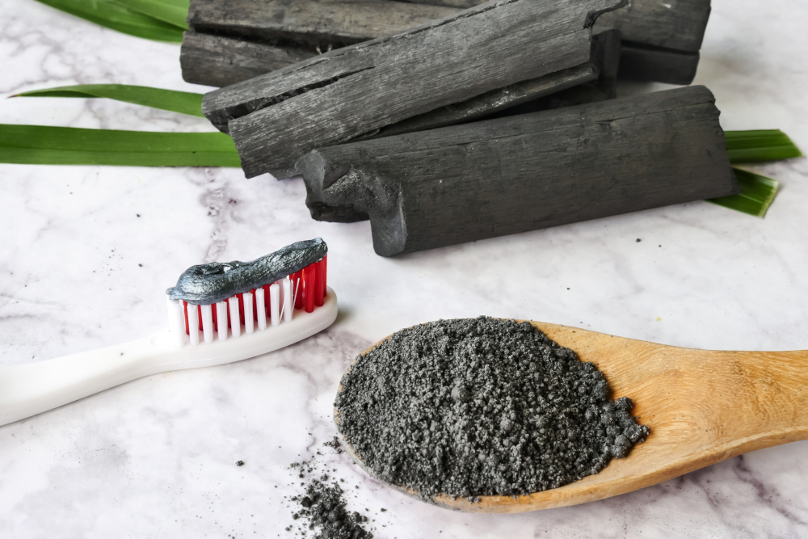

¿Para qué sirve?
El carbón activado elaborado con cáscaras de plátano es un material poroso con múltiples aplicaciones prácticas:
- Purificación de agua potable: Elimina contaminantes orgánicos e inorgánicos.
- Tratamiento de aguas residuales: Adsorbe metales pesados y colorantes.
- Diarrea: El carbón activado puede tratar la diarrea.
- Blanqueamiento de dientes y salud bucal: Docenas de productos para el blanqueamiento de los dientes contienen carbón activado.
- Uso farmacéutico: Con frecuencia, el carbón activado puede ayudar a eliminar toxinas y medicamentos.





Ventajas del uso de carbón activado natural
Además de sus aplicaciones funcionales, su producción a partir de residuos orgánicos es sostenible y económica, favoreciendo al medio ambiente.